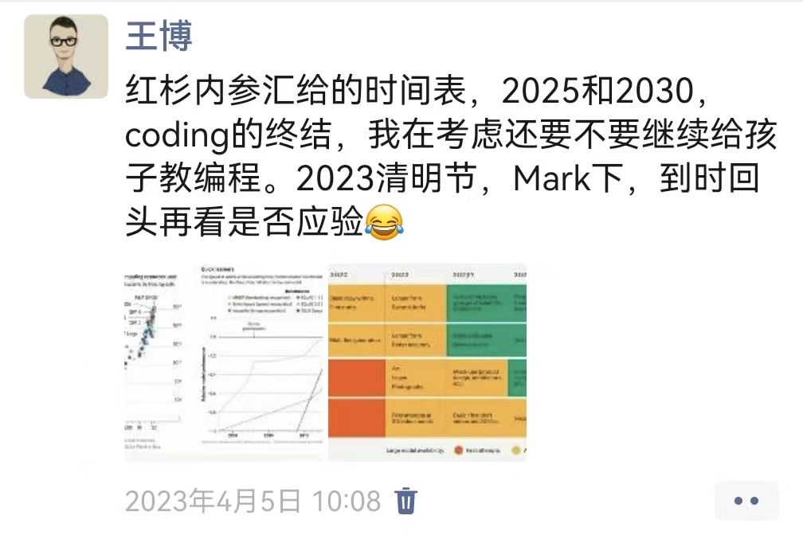
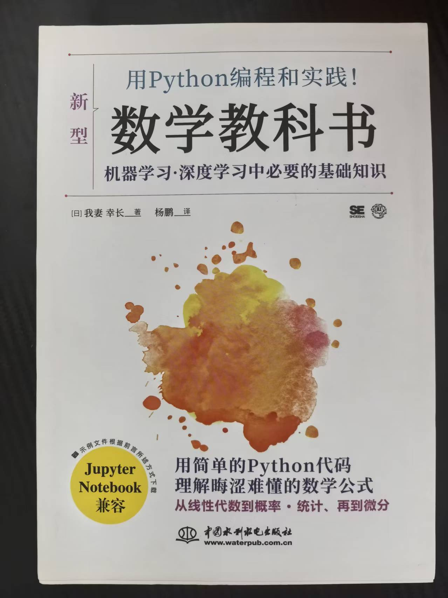

在 AI 大行其道的时代，我们还有必要教孩子学习编程吗？
2020 年疫情居家隔离的日子里，想给家里 10 岁的孩子找点有意义的事情做。当时并没有想让他走信奥竞赛的路，只是想让他理解软件和计算机是怎么一回事，顺便锻炼一下逻辑思维，把学校里学的数学知识巩固巩固，看看这些抽象概念在实际问题中是怎么派上用场的。想来想去，编程既能训练思维，又有一定的创造乐趣，于是决定自己来教他。
自己教有个好处，内容可以完全按孩子的节奏来。还有一个隐藏的好处：这本身就是一种亲子时光。那时候没有补习班可去，我和孩子的相处时间突然变多了。与其各玩各的，不如找件事情一起做。编程刚好是我擅长的，何不把它变成我们共同的 "项目"？
基于这些想法，我直接让孩子从 Python 开始学起。当时找了一些入门书籍，考虑到小学生的知识结构，他们掌握了基本的运算和几何知识，了解未知数和方程的概念，会解应用题，但还没学过函数，我便重新规划了学习内容，设计了适合这个年龄段的讲解方式和练习题目。
那时还没有 ChatGPT，人工智能写代码仿佛还是个遥远的概念。
那个假期，我带着孩子把 Python 的基础过了一遍。除了日常练习，期间还陪他写过康威生命游戏、课程表，甚至给他妈妈做了一个年会抽奖程序。
现在回忆起来，编程是我们居家隔离日子里的游戏。我出题，他实现；他卡住了，我引导。过程中有讨论、有争论、有 "啊哈时刻"。做完一个小项目，我们一起测试、一起找 bug、一起庆祝。那些围在电脑前调代码的下午，是那段特殊时期里难得的温馨记忆。
后面几年，工作和学业都忙了起来，教孩子编程这件事就一直搁置着。
转眼六年过去，孩子已经 16 岁，刚刚完成高中选科。而此刻 AI 发展得如火如荼，"软件工程会不会被 AI 取代" 这个问题已经从技术讨论变成了一种普遍的现实焦虑。
这个假期还要不要抽空继续教孩子编程？这个问题自从 2022 年底 AI 证明了它能够胜任编程这件事之后，就时常萦绕在我脑海中。
记得 2023 年 4 月，看到红杉资本发布的一份关于 AI 未来能力趋势的预测报告，提到 2025 和 2030 年两个时间节点，AI 会在不同程度上替代人类程序员。当时我发了下面这条朋友圈。

去年 2025 年 11 月，Anthropic 发布 Claude 4.5，AI Agent 的能力突飞猛进，业内开始出现 "2026 年将是软件工程终结" 的论调。我又发了条朋友圈。
既然我相信编程作为一项专业技能注定被 AI 自动化，那现在是否还有必要投入时间教孩子学编程？
经过反复思考，我的答案是：有必要的。
计算机软件作为一门 "专业职业" 走下坡路几乎是必然的。但与此同时，编程正在变成一项 "基础能力"。这两件事并不矛盾，它们描述的是同一个趋势的两面。
为什么需要这个基础能力？可以用数学来做一个简单的类比。
计算器和计算机在数学运算能力上早就超越了人类。论计算速度、精确度、复杂度，人类完全不是机器的对手。但我们并没有因此放弃让孩子学习数学，放弃让他们做各种数学训练。
为什么？因为我们学数学，从来不只是为了 "会算数"。数学是理解物理世界运行规律的语言，是培养抽象思维和逻辑推理的工具，是通往物理、化学、工程等其他学科的桥梁。换句话说，数学的价值不在于它的 "职业性"，而在于它的 "基础性"。它是认知世界的底层能力，是构建其他能力的基石。
编程正在走上同样的道路。
过去我们学编程，很大程度上是为了成为程序员，进入软件行业，获得一份体面的工作。这是一种 "职业导向" 的思路。但当 AI 可以自动写代码，当 "程序员" 这个岗位的需求可能大幅下降时，这条路径的吸引力确实在减弱。
然而，这并不意味着编程本身变得不重要了。恰恰相反。
未来我们将被数字世界深度包围，软件定义一切。即使不从事软件开发，你也会生活在赛博世界中，需要理解虚拟世界的逻辑，知道它们的边界，甚至能够在一定程度上驾驭它们。这就像物理世界需要借助数学来理解一样，数字世界需要借助编程来理解。
所以，编程的价值正在从 "成为程序员的入场券" 转变为 "理解数字世界底层原理的工具"。它不再首先服务于就业，而是服务于认知，帮助我们理解这个越来越由比特驱动的赛博世界是如何运作的。
从这个角度来说，编程不是变得不重要了，而是变得更加下沉和普遍了。它正在从一门 "专业技能" 演变为一门 "基础学科"，就像数学从古代少数人掌握的高深学问，变成了今天每个孩子都要学习的基础课程一样。
除此之外，还有一个原因让我觉得教孩子编程值得继续：编程是一种富有实用性和创造力的亲子游戏。
就如同和孩子下棋一样。AI 早就战胜了人类棋手，但我们还是会和孩子下棋。这不仅能训练孩子的策略思维，更重要的是一起享受对弈的乐趣，享受那种你来我往、斗智斗勇的陪伴时光。
编程比下棋更进一步。它不只是博弈，还是创造。你们可以一起构思一个小程序，一起讨论怎么实现，一起调试，一起看着它运行起来。那种从无到有的成就感，是很多其他亲子活动难以提供的。人与 AI 最大的不同，在于人类特有的体验感。我们追求学习的目的，也享受学习的过程，尤其享受陪伴孩子一起学习成长的快乐。
即使家长本身不会编程也没关系。如果只是想陪孩子一起学，不为了成为职业程序员，我的经验是具备高中数学知识其实就可以开始了。
在给我们家的高中生准备这个假期的编程学习内容时，我翻出了 2020 年给他教 Python 时的备课大纲。回顾其中的内容，发现有些东西也可以分享给有需要的家长，毕竟当时确实花了一些心思。
比如，如何把各种抽象概念类比到孩子能理解的事物上。我把变量类比为 "给盒子贴标签"，把字典（Dict）类比为 "快递柜"；又琢磨怎么把计算机体系结构的知识拆分到合适的位置，让孩子更容易理解。此外还构思过如何设计内容和练习题目，能顺便巩固和练习相关的小学数学知识，比如运算、几何、古典概率等等。
为了不让这些心思白费，我让 AI 帮忙做了结构化的整理，放在了 https://magicbowen.github.io/python-for-kids/。这套教程的目标人群是三年级以上的小学生，同时也是给家长用来学习和备课的。我建议家长朋友亲自给孩子教，或者和孩子一起学习，享受从无到有创造东西的乐趣，留下一些别样的亲子回忆。

有需要的家长可以看看是否能借鉴一二。如果你本身也是位程序员家长，想添加一些自己的经验，欢迎共建：https://github.com/MagicBowen/python-for-kids。
最后，这个假期（2026 年寒假），在给已经是高中生的孩子准备继续教编程时，我意识到一件事：仅仅掌握编程，对于理解未来数字世界的底层原理还是不够的。
如今这个时代，AI 已经渗透到我们生活的方方面面。如果说编程是理解数字世界的工具，那么 AI 就是这个世界里最重要的 "魔法"。孩子们将来要和 AI 共处、协作，甚至驾驭它，就不能只会用它，还得理解它背后的原理。
所以，如果孩子已经到了高中阶段，并且掌握了基本的 Python 编程能力，我更推荐用《用 Python 编程和实践数学教科书》这本书来进阶。
这本书的难度刚好适合高中生，对于刚学完各种函数概念的孩子非常合适。一方面可以通过编程巩固和复习高中数学，让那些抽象的概念马上学以致用；另一方面，书中的编程内容使用了 NumPy，刚好把编程学习从标量进阶到向量和矩阵。更重要的是，这本书还把这些数学知识和深度学习背后的原理结合了起来，让孩子在学习编程和数学的同时，也能理解 AI 是如何学习和工作的。
有了这本书，这次就不用再特意备课准备教程了，省事儿不少。感兴趣的朋友可以收藏，留以备用。
